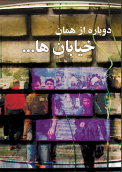
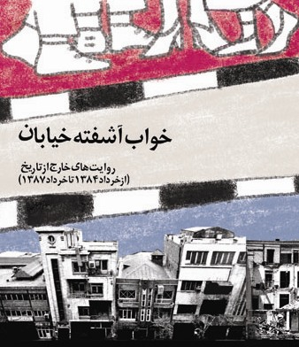
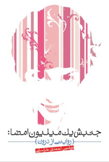

انتشارات کمپین
دوباره از همان خیابانها ، ویژه 22 خرداد ، خرداد 89

"دوباره از همان خیابان ها "، مجموعه ای مصاحبه ها و یادداشت است که با هدف مکتوب کردن روایت های بخشی از فعالان جنبش زنان گردآوری شده است
********************************************
خواب آشفته خیابان، ویژه 22 خرداد 78

"خواب آشفته خیابان"، مجموعه ای مصاحبه ها و یادداشت است که با هدف مکتوب کردن روایت های بخشی از فعالان جنبش زنان از وقایع22خرداد سال های1384و1385 و همچنین13اسفند 1385 گردآوری شده است.
********************************************
کتابچه تاثیر قوانین بر زندگی زنان، شماره یک/چند همسری

********************************************
جنبش یک میلیون امضاء: روایتی از درون / نوشین احمدی خراسانی

********************************************
کتابچه ویژه 8مارس از کمپین رشت

********************************************
فولدر ویژه 8مارس از کمپین رشت

******************************************
دفترچه تاثیر قوانین بر زندگی زنان(یکی از سه سند اصلی کمپین)

برای دریافت کتابچه به این قسمت مراجعه کنید
انتشارات دیگران
مقالههاى اين بخش
- 3 خرداد 1388

مشق شب و تکالیف دوستان در بند ما
سیاوش خدایی
- 21 اردیبهشت 1388

نقدي بر بيانيه مطالبه محور بخشي از جنبش زنان
زهره اسدپور
- 17 اردیبهشت 1388

همپوشاني ناگزیرجنبشهاي اجتماعي با يكديگر
ياشار گرمستاني
- 14 اردیبهشت 1388

فیلم سوات
فاروق سوله ریا /Farooq Sulehria/ ترجمه علی عبدی
- 8 اردیبهشت 1388

برای مریم مالک
وبلاگ مهمان - شهاب الدین شیخی
- 25 فروردین 1388

در روزهای پرتب و تاب 8 مارس
یاشار گرمستانی
- 16 فروردین 1388

اعتراض به درباره تصویب قانون ضد به امضا کرزای
نادیا فاضل-روزنامه نگار و فعال حوزه زنان( افغانستان)
- 2 فروردین 1388

متن سخنرانی ثریا موکت در مراسم روزجهانی زن/ آخن
ثريا موکت-برگردان از آريانه پگاه
- 19 اسفند 1387

به بهانه 8 مارس، روز جهانی زن
- 8 اسفند 1387

گفتگو با دکتر مرفوعه تختخوتجاوه ؛ از پیشروان با سابقه جنبش زنان ازبکستان
عالیه لی شاهید، ترجمان : نیلوفر انسان
- 26 بهمن 1387

گزارشي از سازمان غير دولتي سپاه قدرت
مونا محمدزاده
- 23 بهمن 1387

پیوند با کمپین برابری
نامه ی تازه ای از فرزاد کمانگر
- 8 بهمن 1387

سقط جنين به روايت حاتمي كيا
كارگروه نقد فيلم كمپين يك ميليون امضا در تهران
- 22 دی 1387

تجربه دیگران
ترجمه: فرشاد صدوقیان
- 8 دی 1387

گزارش اجراهای خیابانی کارگروه تیاتر کمپین
نسیم خسروی مقدم
- 2 دی 1387

دیدار برخی فعالان کمپین با عبدالفتاح سلطانی برنده جایزه نورنبرگ
گزارش : آیدا سعادت
- 10 آذر 1387

ساختار داشتن یا نداشتن
جو فریمن (2)/ ترجمه: فرشاد صدوقيان
- 5 آذر 1387

راهپیمایی کمپین 1 در9: همبستگی با آنان که خاموش نمی مانند
گزارش و عکس : رها عسگری زاده
- 29 آبان 1387

کاری از سازمان بهداشت جهانی سازمان ملل
تهیه و تنظیم: حمید حمیدی
- 19 آبان 1387

کمپین و هنر اعتراضی
سیاوش خدایی
- 13 آبان 1387

میزگردی با کمیته داوطلبان کمپین
مریم مالک
- 1 آبان 1387

جمع آوری امضا ، ادعایی که باید به آن عمل کرد
مازيار سميعي
- 27 مهر 1387

نظام ستارگان
جو فريمن /ترجمه: فرشاد صدوقيان
- 18 مهر 1387

گفت و شنودی با فعالان زن افغانی و عراقی در تهران
مریم مالک
- 11 مهر 1387

زنان شاعر ايراني و زن در شعرایرانی
امیر رشیدی
- 3 مهر 1387

در حاشیه طرح پذيرش دانشجويان دختر در محل اقامت
نیلوفر گلکار
- 29 شهریور 1387

مقایسه دو جنبش حقوقی زنان
سیاوش خدایی
- 20 شهریور 1387

نگاهی به ساختارهاي رسمي و غيررسمي درجنبش زنان
جو فريمن/ترجمه: فرشاد صدوقيان
- 18 شهریور 1387

پرسش و پاسخ در کارگاه حقوق متهم
تنظیم : مریم زندی
- 14 شهریور 1387

گزارش تصویری
تغییر برای برابری
0 |
|